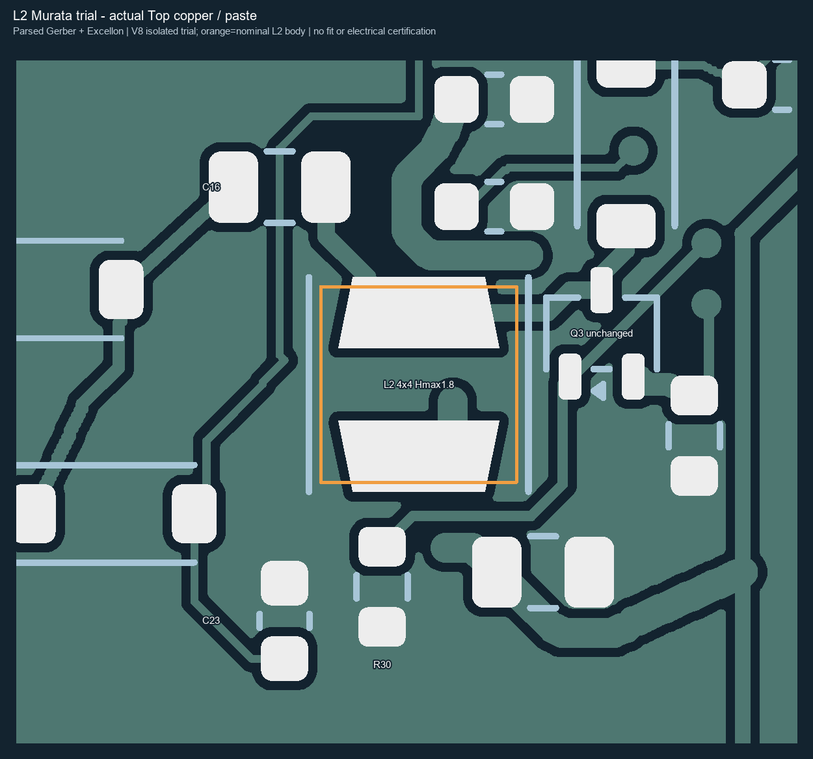
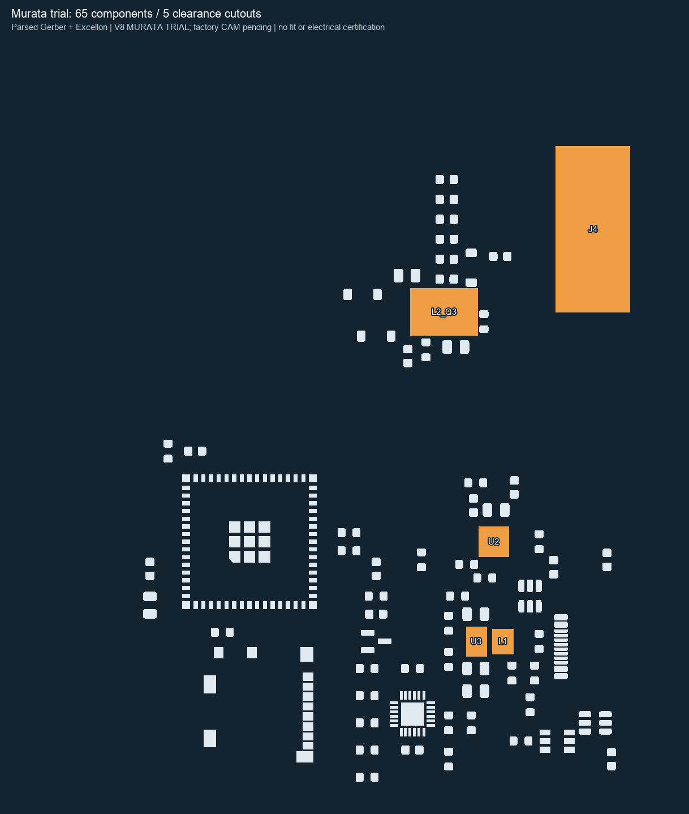

Hướng dẫn setup PCB & stencil — FX580 V8 Murata
5 PCB · lắp 6 linh kiện trên 2 bo · 1 stencil tự hàn 65 linh kiện
Bản hướng dẫn ngày 11/10/2026 dùng cho bản thử Murata LQH44PH470MPRL, cao tối đa 1,8 mm đã chuẩn bị. Quote JLCONE hiện còn bản USB_FIX1 cũ; cần thay đúng bộ tệp dưới đây khi dùng bản thử. Hướng dẫn này chưa thực hiện upload hay đặt hàng.
Thông số là yêu cầu của dự án; tên mục lấy theo form JLCONE đã quan sát và tài liệu JLCPCB kiểm lại ngày 11/10/2026. Nếu tên mục đổi, chọn giá trị tương ứng và đọc lại trước lưu. Cấu hình main USB_FIX1 với L2 TDK không dùng chung bộ tệp Murata.
1. Chuẩn bị đúng tệp
Giải nén gói tổng bản thử Murata trước; khi form yêu cầu upload, chọn từng tệp dưới đây. Không nạp ZIP tổng vào Add Gerber.
| Mục nạp | Tệp đúng cho bản thử |
|---|---|
| PCB / Add Gerber | FX580_V8_MURATA_TRIAL_GERBER.zip |
| PCBA / BOM | BOM_FACTORY_6PARTS.csv |
| PCBA / CPL | CPL_FACTORY_6PARTS.csv |
| SMT Stencil / Add Gerber | FX580_V8_MURATA_TRIAL_STENCIL65.zip |
BOM_FULL_71.csv và CPL_FULL_71.csv để tra cứu đủ 71 linh kiện; dùng hai CSV FACTORY_6PARTS cho lắp xưởng. Folder factory_stencil_reference dành đối chiếu stencil nội bộ của xưởng cho 6 linh kiện; stencil tự hàn cần nạp ZIP STENCIL65.
2. Setup PCB
- Vào PCB / Standard PCB-PCBA, chọn Add Gerber và nạp
FX580_V8_MURATA_TRIAL_GERBER.zip. - Đợi parse xong. Kiểm 4 lớp, kích thước bo đơn 65,1 × 132,78 mm, hình hai mặt; đặt tên quote FX580_V8_MURATA_TRIAL nếu có ô tên.
- Chọn các giá trị trong bảng. Ở Layer Sequence và Layer Stackup, mở modal, chọn đúng rồi Confirm.
| Tên mục trên form | Giá trị cần chọn |
|---|---|
| Base Material | FR-4 / FR4 TG135 |
| Layers | 4 |
| PCB Quantity | 5 |
| Different Designs | 1 |
| Delivery Format | Single PCB |
| PCB Thickness | 0.8 mm |
| Dimensions — bo đơn | 65.1 × 132.777 mm (UI có thể làm tròn 132.78) |
| PCB Color / Silkscreen | Green / White |
| Surface Finish | ENIG, gold thickness 1 µin |
| Outer Copper Weight | 1 oz |
| Inner Copper Weight | 0.5 oz |
| Layer Sequence | L1 F_Cu.gtl → L2 In1_Cu.g1 → L3 In2_Cu.g2 → L4 B_Cu.gbl |
| Layer Stackup | JLC04081H-7628; chọn và Confirm |
| Impedance | No Requirement |
| Via Covering | Plugged |
| Min Via Hole | 0.3 mm (chọn nhóm tương ứng 0.3 mm / 0.4–0.45 mm nếu UI ghi như vậy) |
| Plating | Not Specified |
| Outline Tolerance | ±0.2 mm / Regular |
| Mark on PCB | Remove Mark |
| Electrical Test — PCB | Flying Probe Fully Test |
| Gold Fingers / Castellated Holes / Press-fit / Edge Plating / Blind Slots / UL / Backdrill | No / không bật |
| Confirm Production File | Yes; tick Do not confirm automatically rồi Confirm |
| Separate Stencil trên form PCB | Off; stencil65 được đặt trong SMT Stencil riêng |
Tên Gerber bên trong ZIP vẫn có prefix FX580_Main_EPD_LAYOUT_V8. Chọn layer theo suffix F_Cu.gtl / In1_Cu.g1 / In2_Cu.g2 / B_Cu.gbl, không đổi thứ tự hai lớp trong. Bản PCB thuần có 9 Gerber, 2 drill và 1 job; paste tham chiếu xưởng nằm riêng trong factory_stencil_reference.
Sau khi bật PCBA và thêm rail 5 mm mỗi bên, UI có thể hiện kích thước tính phí 75,1 × 132,78 mm như quote trước. Kích thước thành phẩm vẫn là bo đơn 65,1 × 132,78 mm sau tách rail. Giữ yêu cầu tách rail trước giao.
3. Setup PCBA — lắp đủ 2 bo
| Tên mục trên form | Giá trị cần chọn |
|---|---|
| PCB Assembly | On |
| Assembly Type | Standard |
| Assembly Side | Top Side |
| PCBA Quantity | Custom Qty = 2 |
| Parts Selection | By Customer / Self-Service |
| Rails / Fiducials | Added by JLCPCB |
| Depanel boards & edge rail before delivery | Yes |
| Confirm Parts Placement | Yes; tick Do not confirm automatically rồi Confirm |
| Stencil Storage / Fixture Storage | No / No |
| Solder Paste | High temp. |
| Packaging | Antistatic bubble film |
| Bake / Photo / Cleaning / Coating / Special Stencil / PCBA Flying Probe / Function Test / Nitrogen Reflow | No theo cấu hình đã chuẩn bị |
PCB Quantity = 5; PCBA Quantity = 2. Kết quả yêu cầu là 2 bo được lắp 6 linh kiện và 3 bo trống. Mỗi bo lắp đủ J4/L1/L2/Q3/U2/U3; tổng 12 vị trí. Phần còn lại người dùng tự hàn.
Nạp BOM/CPL và match mã
- Bấm Next đến Bill of Materials. Nạp
BOM_FACTORY_6PARTS.csvvàCPL_FACTORY_6PARTS.csv, rồi Process BOM & CPL. - Phải nhận 6 dòng; kiểm từng mã trong bảng dưới. Chỉ chốt bước match khi đủ 6 mã được chọn/xác nhận và không còn shortage. Nếu UI dùng bộ đếm Detected/Confirmed, kỳ vọng 6/6.
- Kiểm tooltip để đọc Part Qty Per PCB = 1 và PCBA Qty = 2. Số lượng mua có thể lớn hơn 2 vì hao hụt/MOQ; số đó không có nghĩa là lắp nhiều hơn 2 bo.
- L2 phải là C1857945, không phải TDK C3220812. Kiểm tồn kho mới: 5 chiếc được quan sát trước đó chưa được giữ hàng. Nếu thiếu, giữ nguyên thiết kế/mã và xử lý nguồn hàng trước khi tiếp tục; không chọn Do not place để bỏ vị trí cần lắp.
| Ref | Mã hãng phải khớp | LCSC | Mỗi bo | 2 bo |
|---|---|---|---|---|
| J4 | FH12-24S-0.5SH(55) | C202112 | 1 | 2 |
| L1 | DFE252012F-R47M=P2 | C703140 | 1 | 2 |
| L2 | LQH44PH470MPRL | C1857945 | 1 | 2 |
| Q3 | SI1308EDL-T1-GE3 | C469327 | 1 | 2 |
| U2 | BQ24074RGTR | C54313 | 1 | 2 |
| U3 | TPS63802DLAR | C2845237 | 1 | 2 |
JLCPCB khuyến nghị BOM/CPL phải khớp reference designator và đối chiếu chi tiết mã khi match. Hướng dẫn BOM/CPL chính thức.
Kiểm Component Placements
CPL dùng đơn vị mm theo Aux Origin, y lên, tất cả Top. Bảng dưới là số liệu của file đã chuẩn bị; không tự đổi dấu Y hoặc đưa góc Q3 về góc native của KiCad. Kiểm ảnh part model theo chân thực vì mỗi thư viện xưởng có cách đặt góc riêng. Quy cách CPL chính thức.
| Ref | X (mm) | Y (mm) | Layer | Góc CPL |
|---|---|---|---|---|
| J4 | 61.6 | -16.5 | Top | 90.0° |
| L1 | 51.0 | -62.0 | Top | 90.0° |
| L2 | 43.25 | -25.65 | Top | 90.0° |
| Q3 | 47.0 | -24.6 | Top | 270.0° |
| U2 | 50.0 | -51.0 | Top | 0.0° |
| U3 | 48.0 | -62.0 | Top | 0.0° |
- L2 ở tâm (43,25; −25,65), trên hai pad hình thang. Thân 4 × 4 mm; không phủ sang Q3 hoặc tụ/trở quanh nó.
- Q3 giữ tâm (47; −24,6), CPL 270°; đối chiếu chân 1 và các net thực.
- J4 giữ tọa độ tâm housing đã hiệu chỉnh; kiểm phía miệng cắm FPC và hàng chân đúng CAD. Không dịch lại theo tâm origin footprint.
- U2/U3 kiểm chân 1, pad thermal và chiều package; L1 đúng footprint/mã.
- Chỉ 6 reference được lắp. 65 linh kiện tự hàn không xuất hiện trong scope xưởng.

Hình này là đối chiếu local CAM; phải kiểm lại preview sau khi xưởng match part và panelize, không dùng hình để tự xác nhận pin1 của mọi thư viện xưởng.
Remark PCBA để sao chép
Dán vào Assembly Remark nếu có. Có thể đính kèm PCBA_REMARK_EN.txt qua kênh lưu yêu cầu của đơn cùng CAD/ảnh đối chiếu khi cần.
ISOLATED FX580 V8 MURATA TRIAL. Manufacture 5 PCBs; assemble exactly 2 PCBs on Top side. Populate ALL SIX positions J4, L1, L2, Q3, U2 and U3 on EACH assembled PCB (12 placements total). BOM and CPL are for one single PCB; do not duplicate rows for the second board. L2 MUST be Murata LQH44PH470MPRL / C1857945 with the new trapezoid-pad footprint in the supplied trial Gerber. U2 MUST be TI BQ24074RGTR / C54313; U3 MUST be TI TPS63802DLAR / C2845237. Match all six exact MPNs to the supplied BOM. No further substitutions or omitted positions. The other 65 components are not included in factory assembly. Add assembly rails/fiducials as needed, then depanel and remove rails before delivery. Please provide PCB production CAM and matched-part placement preview for customer approval; do not auto-confirm. Verify J4 housing/contact orientation, Q3 pin1 and all IC pin1 locations against the supplied CAD. The factory_stencil_reference folder contains paste for these six parts only; it is not the separate manual rework stencil.
Nếu form có toggle Assembly Remark, chọn Yes để nhập đoạn này. Sau khi xong, đọc lại Standard / Top / CustomQty2 / DepanelYes / ConfirmPlacementYes trước lưu quote.
4. Setup stencil tự hàn 65 linh kiện
Tạo mục SMT Stencil độc lập và upload FX580_V8_MURATA_TRIAL_STENCIL65.zip. JLCPCB hỗ trợ đặt stencil riêng và làm theo tệp đã nạp cho mục stencil. Cách đặt stencil chính thức.
Trong JLCONE trước đó, bật stencil trên form PCB đã làm PCBA tắt; vì vậy giữ stencil đi kèm PCB Off, dùng SMT Stencil riêng. Sau đổi tab, kiểm quote PCB còn đúng thiết lập hoặc khôi phục từ mục 2–3.
| Tên mục trên form | Giá trị cần chọn |
|---|---|
| Mục đặt hàng | SMT Stencil riêng |
| Stencil Type | Solder Paste Stencil |
| Framework / Frame | No / Frameless |
| Stencil Side | Top Only |
| Customized Size | Yes |
| Custom Size X / Y | 100 / 170 mm |
| Quantity | 1 |
| Thickness | Customer Thickness = 0.12 mm |
| Apertures | 1:1 as per paste layer |
| Multiple PCBs / Designs | No; một thiết kế bo đơn |
| Step Stencil | No |
| Nano Coating | No |
| Surface Treatment | Sanding |
| Fiducials | No Fiducial |
| Engraving | No |
| Confirm Production File | Yes; tick Do not confirm automatically rồi Confirm |
Nếu UI yêu cầu chọn kích thước mẫu trước Custom Size, chọn mẫu có vùng chế tạo chứa được 100 × 170 mm. Theo hướng dẫn JLCPCB, mẫu 380 × 280 mm có vùng hiệu dụng 290 × 190 mm; tấm cắt cuối vẫn đặt 100 × 170 mm. Căn bo giữa tấm, chiều dài bo dọc theo cạnh 170 mm. Hướng dẫn kích thước stencil.
JLCPCB có xử lý aperture mặc định; bản này yêu cầu 1:1 theo F.Paste đã cung cấp và ghi remark để giữ các cửa tránh thân. Quy định aperture và độ dày.
Kiểm CAM của stencil
263 hình paste cho 65 linh kiện = 25 tụ + 29 trở + 11 linh kiện khác. Bỏ 63 hình paste của 6 linh kiện xưởng; thêm 5 cửa lớn: J4, L1, L2+Q3, U2, U3.
- 5 cửa lớn là lỗ tránh thân lắp sẵn, không phải vị trí in kem; giữ đúng cửa L2/Q3 mới của bản Murata.
- Không mở lại paste cho 6 linh kiện đã giao xưởng, không tạo aperture ở mặt Bottom/keypad.
- ZIP stencil chỉ có F.Paste + Edge.Cuts. Edge.Cuts là biên bo tham chiếu; biên tấm stencil phải là 100 × 170 mm, không cắt tấm theo biên bo.
- Khoảng cửa/paste nhỏ nhất local 0,175 mm; yêu cầu xưởng kiểm cầu thép, kích thước thân/mối hàn thực và gửi CAM trước chế tạo. Nếu cần đổi aperture/cửa, xem lại CAM rồi mới chốt.

Remark stencil để sao chép
Dán đoạn này vào Stencil Remark hoặc đính kèm STENCIL_REMARK_EN.txt với mục stencil.
Manual rework stencil for the ISOLATED V8 MURATA TRIAL, single depanelled PCB, Top only, frameless, 0.12mm, 100 x 170mm, quantity 1. Centre board in sheet. Supplied F.Paste has 263 paste features for 65 unassembled parts and FIVE LARGE COMPONENT CLEARANCE CUTOUTS for installed J4, L1, L2+Q3, U2, U3. The five large windows are body clearance, NOT paste deposits: laser cut as supplied, do not restore pad patterns, reduce or split them. No bottom/keypad apertures. Do not use for factory PCBA stencil. Please provide CAM for approval and check narrow steel bridges and actual installed component body/solder clearance. Use single-board coordinates without assembly rails. Follow the supplied paste layer exactly at 1:1; do not apply default aperture resizing. Edge.Cuts is PCB outline reference only, NOT the final stencil sheet cutting outline. Align the long PCB side with the 170mm sheet direction. Minimum local clearance-window-to-paste bridge is approximately 0.175mm; please review mechanical strength and actual body/solder clearance and return CAM before fabrication.
Dùng stencil sau khi nhận bo
Dùng 1 tấm lần lượt cho 2 bo đã tách rail. Đặt cho thân linh kiện lắp sẵn đi qua 5 cửa, kiểm stencil áp sát các vùng paste. Che cửa từ phía trên và quét từng vùng bằng dụng cụ nhỏ tránh thân nhô; vùng không áp sát hoặc không quét được cần chấm kem tay. Không quét một đường toàn bo qua linh kiện đã lắp.
5. Đọc lại trước chốt đơn
| Kiểm | Kết quả phải có |
|---|---|
| ☐ Revision | Gerber, BOM, CPL và stencil đều là MURATA_TRIAL |
| ☐ PCB | 5 chiếc / 4 lớp / 0,8 mm / ENIG / đúng sequence + stackup |
| ☐ Lắp | Standard / Top / 2 bo / 6 refs mỗi bo / 12 placements |
| ☐ Match | Đủ 6 mã, L2 C1857945, U2 C54313, U3 C2845237; không bỏ vị trí |
| ☐ Hình lắp | J4 housing, Q3 chân1, U2/U3 chân1 và L2 footprint đúng |
| ☐ Giao bo | Depanel & remove rails = Yes |
| ☐ Stencil | Mục riêng / Top / không khung / 100 × 170 / 0,12 mm / Qty1 |
| ☐ Hình stencil | 263 paste + 5 cửa tránh / xưởng kiểm cầu thép và thân thực |
| ☐ Duyệt | Production File và Parts Placement cần duyệt, không auto-confirm |
| ☐ Giá | Đọc tổng mới gồm linh kiện + feeder + SMT + PCB + stencil + vận chuyển |
Giá quote cũ 49,95 USD và stencil cũ 7,22 USD chỉ là số quan sát trước đây; không dùng làm tổng đơn mới. Hướng dẫn không bảo đảm tồn kho hay lịch giao hiện tại.
Bản thử đã qua ERC/DRC theo cấu hình dự án và kiểm Gerber độc lập; chưa đo boost/nhiệt và chưa kiểm vỏ thực với H1,8 mm. Cần các phép kiểm đó trước khi coi thiết kế được xác nhận trên phần cứng. Factory CAM cũng chưa được duyệt.
6. Nhận diện tệp và tài liệu
| Tệp | SHA-256 đã kiểm |
|---|---|
| PCB ZIP | 532fa5c65752247b3a53d38e51cdf6ca6c8f0c951b6fe0eed688836b55384155 |
| Stencil65 ZIP | 8719f42c93a6df2554fb5be6a62f846cfba8b7c97e47d1ed207b3a8fa7aa17b3 |
README bản thử · Yêu cầu lắp 2 bo · Kết quả kiểm · Báo cáo bàn giao
Thông số cụ thể dựa trên gói bản thử và log setup JLCONE của dự án. Nguồn JLCPCB được dẫn cạnh phần hướng dẫn tương ứng; kiểm lại ngày 11/10/2026. Đây là tài liệu hướng dẫn, không phải xác nhận quote đã được áp dụng hay đơn đã được đặt.